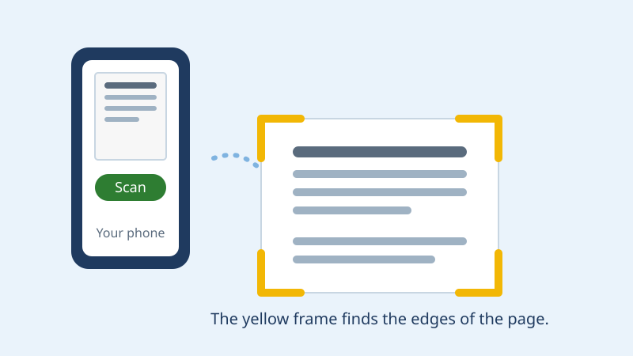

How to Scan a Document with Your Samsung Galaxy
Amina is 68 years old. One morning, her daughter called from another city. "Mother," she said, "the office needs a copy of your identity card and the electricity bill. Can you send me a photo of them on WhatsApp?"
Amina looked at the papers on her table. She knew how to take a photo, but a photo of a paper is often crooked, or too dark at the edges, or cut off at the corner. Her daughter needed something clear enough to read, and to print.
There is a better way than a plain photo, and it is already on her phone. A Galaxy phone can scan a paper page, the way a big office scanner does. It finds the edges of the page by itself, straightens it, brightens it, and saves a clean copy. You do not need to buy a scanner, and you do not need to install any new app. This guide shows you how, step by step, for one page and for several pages.

What scanning is, in plain words
Scanning means making a clean, flat copy of a paper page with your phone. A normal photo keeps everything the camera sees — the table around the paper, the shadow of your hand, the tilt of the page. A scan is different. The phone looks for the four edges of the paper, cuts away the table and the shadows, and straightens the page, so the copy looks like the paper itself, lying flat.
You can scan almost any flat paper: an identity card, a bill, a letter, a prescription, a school form, a receipt, or a page from a book. The scan is saved as a picture in your Gallery, and if you have several pages, you can save them together as one PDF file. A PDF is a common kind of document file. It keeps all the pages in order, in one file, and it prints well. Offices, schools, and banks often ask for a PDF, because it is easy to open and hard to change by accident.
There are two ways to scan on a Galaxy phone, and both are already on your phone. Method 1 uses the Camera app, and it is the quickest way to scan one page. Method 2 uses Samsung Notes, and it is the best way to scan several pages and save them as one PDF. Try Method 1 first. You only need Method 2 when you have more than one page.
Before you start — three quick checks
Do these three things before you begin. They take two minutes, and they make the difference between a clear scan and a blurry one.
- Put the paper on a flat surface. A table is best. Smooth out any folds with your hand, and make sure the whole page is flat. A page that curls up at the corners will come out blurry at the edges. If the paper is old and crinkled, put a heavy book on it for a few minutes first.
- Give it good light. Sit near a window in the daytime, or switch on a bright lamp above the table. The phone needs to see the edges of the paper clearly, and it cannot do that in a dark room. But do not let the light shine straight onto the paper, because the shine will show up in the scan. And watch out for your own shadow: stand to one side, so your shadow does not fall across the page.
- Put something dark under a light-coloured page. If the paper is white and the table is white too, the phone may not see where the paper ends and the table begins. Put a dark cloth, a dark tray, or a dark book under the paper. The contrast helps the phone find the edges. This one trick fixes most failed scans.
Now you are ready. You will hold the phone above the page, about the height of a school ruler, and look at the screen. Do not press anything yet. First, just watch what the phone does.
Method 1: Scan one page with the Camera app
This is the quickest way. It works for one page at a time, and the scan is saved in your Gallery as a picture.
- Open the Camera app. It is the app with the camera symbol on it. It usually sits on your home screen, or at the bottom of the screen.
- Hold the phone above the page, flat and steady. Hold it with both hands if you can, like holding a tray. Keep the whole page inside the screen, with a little bit of table showing around all four edges. The phone needs to see the edges of the paper, so do not zoom in, and do not hold the phone at an angle. If your hands shake, rest your elbows on the table.
- Wait for the phone to find the page. After a second or two, a yellow frame should appear around the paper on the screen. That frame means the phone has found the edges of the page. On some phones, a button that says "Tap to scan" or "Scan" appears instead, or a small yellow icon with the letter T in it. Any of these means the same thing: the phone is ready to scan.
- Tap "Scan" or "Tap to scan". Tap the button, or tap the yellow T icon, whichever your phone shows. The phone will take the scan. Hold still for one more second, until the small picture appears in the corner of the screen.
- Check the edges. Tap the small picture in the corner to open it. You should see your page, straightened, with the table cut away. If a corner is missing, or the page is cut off, look for small dots or handles at the corners of the page on the screen. Drag a corner dot until it sits exactly on the corner of the paper. This is how you tell the phone where the page really ends.
- Tap "Save". When the page looks right, tap "Save". The scan is saved in your Gallery, in the same place as your photos. If it looks wrong, tap "Retake" instead, and try again. Retaking costs nothing, and it is better than sending a bad scan.
That is the whole job for one page. Open the Gallery app and look for the scan. It should be the newest picture there. Read How to Take a Photo and Find It in Your Gallery if you are not sure how to find a picture in the Gallery.
If the Scan button never appears
Sometimes the phone does not offer to scan, even when a page is right in front of it. That usually means the scanning feature is switched off in the Camera settings. Here is how to switch it on.
- Open the Camera app, then open its settings. In the Camera app, look for a small gear symbol, usually at the top of the screen. Tap it. A settings screen will open.
- Look for "Scene optimizer" and then "Scan documents". The words may be a little different on your phone. On some phones, the setting is called "Scan documents" and sits under "Scene optimizer". On newer phones, it may be called "Auto scan", or it may sit under "Intelligent features". Look for the words "scan" or "document" on the settings screen.
- Switch it on. Tap the switch beside it, so it turns on. Then go back to the Camera, hold the phone above the page again, and wait for the yellow frame. If you cannot find the setting at all, do not worry — use Method 2 below, which does not need this setting.
If the Scan button still does not appear, the light may be too dim, or the paper may blend into the table. Move to a brighter spot, put a dark cloth under the paper, and try again. A page on a glass table, or a shiny laminated card, can also confuse the phone, because the shine hides the edges. Move the lamp, or tilt the phone a little, until the shine moves off the page.
Method 2: Scan several pages with Samsung Notes and save as a PDF
Use this method when you have more than one page — a form with two sides, a bill with three pages, or a whole letter. Samsung Notes is an app that comes with your Galaxy phone. It can scan one page after another and save them all together as one PDF file.
- Open Samsung Notes. Look for the app with the notepad symbol, usually called "Samsung Notes". If you cannot find it, swipe up from the bottom of the home screen to see all your apps, and look for it there.
- Start a new note. Tap the pencil or "new note" button, usually at the bottom of the screen. A blank note will open. Do not type anything yet.
- Look for the attach button. At the top of the note, or at the bottom, look for a paperclip symbol, or a plus sign (+), or the word "Insert". The exact symbol is different on different phones. Tap it. A small menu will open.
- Tap "Scan". In the menu, look for the word "Scan", or "Scan document". Tap it. The camera will open, ready to scan.
- Scan the first page. Hold the phone above the first page, flat and steady, until the frame appears around it. Tap the round button to take the scan. Check the corners, drag them if you need to, and tap "Save". The first page is now in your note.
- Scan the next page. The camera should stay open, or the note will offer to add another page. Put the second page on the table and scan it the same way. Repeat for every page, in order. Take your time. The pages will stay in the order you scanned them.
- Check the pages in the note. When you have scanned all the pages, go back to the note. You should see all the pages, one after another. If a page is upside down, or in the wrong place, look for the page tools — usually a small menu on the page — to turn it around or move it.
- Save the note as a PDF. Tap the three dots (⋮) at the top of the note, the menu button. Look for "Save as PDF" or "Export as PDF". Tap it. The phone will make one PDF file with all your pages in it. It is usually saved in the same place as your other files, and you can share it straight away.
If you cannot find "Save as PDF" in the menu, look for "Print" instead. The print screen often has a "Save as PDF" choice, and it does the same thing. Read How to Back Up Your Photos on Your Samsung Galaxy if you want to keep a copy of the PDF safe, so you do not lose it if the phone is lost.
Finding your scan and sending it
A scan from the Camera app is saved in the Gallery app, with your photos. It is usually the newest picture there. A PDF from Samsung Notes is saved as a file. To find it, open the "My Files" app, look under "Documents" or "Downloads", and look for the file name, which is often the date, or the name of the note.
To send the scan to someone, open the Gallery, open the scan, and tap the "Share" button. The Share button usually looks like three dots joined by lines, or an arrow pointing up. A list of apps will appear. Tap "WhatsApp", then choose the person, and tap the send arrow. For a PDF, open it, tap Share, choose WhatsApp, and send it the same way. Read How to Send a Photo on WhatsApp from Your Galaxy Gallery for the full steps, with pictures of the buttons to look for.
Before you send a scan, look at it once more, and zoom in with two fingers. Can you read every word? Is the whole page there, including the bottom line? A scan that is missing the bottom line is the most common mistake. If a line is cut off, scan that page again. It takes one minute, and it saves a phone call later, asking you to send it again.
Getting the words out of a scan
Sometimes you do not want a picture of the page at all. You want the words themselves, so you can copy them into a message, or make the text bigger to read it. Your Galaxy phone can do that too, from the same Camera screen.
Open the Camera app and hold the phone above the page, exactly as if you were going to scan it. When the yellow frame appears, tap the yellow icon with the letter T in it. Then look for the words "Extract text" above the photo, and tap them. The phone will read the words on the page and show them as text on the screen. You can then copy that text, paste it into a message, or read it at a bigger size. It works best on printed text, in good light. Handwriting is harder for the phone to read, and it often makes mistakes with it, so check the words carefully before you send them anywhere.
This is useful for a phone number on a letter, an address on a bill, or a few lines you want to keep. For a whole document, a scan or a PDF is still better, because the words stay exactly as they were printed, in the same order, on the same page.
Tips for a clean scan
A good scan is mostly about the setup, not about the phone. These small things make a big difference.
- Work in daylight if you can. Daylight near a window gives the clearest scan. If you must use a lamp, put it to one side, not straight above the paper, so it does not make a bright spot on the page.
- Keep the phone flat. Hold the phone level, straight above the page, not tilted to one side. A tilted phone makes one side of the page bigger than the other, and the words on the far side come out small and blurry.
- Do not zoom in. Zooming makes the picture worse, not better. Move the phone closer instead, until the whole page fills the screen with a little table showing around the edges.
- Wipe the camera lens. The lens is the small glass circle on the back of the phone. If it has a fingerprint on it, every scan will look foggy. Wipe it gently with a soft, dry cloth — your shirt is fine — before you start.
- Scan one page at a time. Do not try to scan two pages of an open book in one go. The fold in the middle will bend the words. Scan the left page, then the right page, one after the other.
- Watch out for shiny cards. Identity cards and laminated papers shine under a lamp, and the shine hides the words. Move the lamp to the side, or tilt the phone slightly, until the shine moves off the card. If the shine will not move, scan the card in daylight instead.
- Check the scan before you send it. Zoom in with two fingers and read a few lines. If the words are blurry, scan again. A scan that cannot be read is worse than no scan at all, because the other person will think you sent the wrong thing.
Practise with Amina
Let us practise with Amina. She puts the electricity bill on the kitchen table, on top of a dark cloth, near the window. She smooths the paper flat with her hand. She wipes the camera lens with her sleeve, opens the Camera app, and holds the phone above the bill with both hands, elbows on the table.
A yellow frame appears around the bill. Amina taps "Scan". The phone takes the scan, and a small picture appears in the corner. She taps it, checks the corners — all four are there, and the bottom line of the bill is not cut off — and taps "Save". Then she opens the Gallery, opens the scan, taps Share, taps WhatsApp, chooses her daughter, and taps the send arrow. Her daughter writes back straight away: "Received, Mother. It is very clear."
Now try it yourself, with a paper you do not mind practising on — an old bill, or a page from a newspaper. Put it on the table, give it good light, hold the phone above it, and wait for the yellow frame. The first scan is the only hard one. After that, you will do it in less than a minute, without thinking about the steps at all.
Common mistakes
- Taking a plain photo instead of a scan. A photo keeps the table, the shadows, and the tilt. A scan cuts all of that away. Always wait for the yellow frame and tap "Scan", instead of pressing the round photo button.
- Scanning in a dark room. The phone cannot find the edges of the paper without enough light. Move near a window, or switch on a bright lamp, and try again.
- Holding the phone at an angle. A tilted phone makes one side of the page blurry. Hold the phone flat, straight above the page, with both hands if you can.
- Cutting off the bottom line. The most common mistake. The page looks complete on the small screen, but the last line is missing. Always open the scan and check the bottom before you send it.
- Forgetting to switch on "Scan documents". If the Scan button never appears, the setting may be switched off. Open the Camera settings, look for "Scene optimizer" and then "Scan documents", and switch it on.
- Scanning a shiny card under a lamp. The shine hides the words. Move the lamp to the side, or scan in daylight, until the shine is gone.
- Sending the scan without checking it. A blurry scan wastes everyone's time. Zoom in, read a few lines, and scan again if the words are not clear.
- Scanning private papers and sending them to the wrong person. A scan of an identity card or a bank letter is a copy of a real document. Only send it to someone you trust, and only when they asked for it. If a stranger on the phone asks you to scan and send your identity card, stop and check first. Read How to Spot a Scam Call or Message before you send anything to someone you do not know.
Frequently asked questions
Do I need to install an app to scan a document?
No. The Camera app and Samsung Notes are already on your Galaxy phone, and both can scan. You do not need to download a scanner app, and you should be careful with scanner apps from the app store — many of them are full of adverts, or ask for payment after a few scans, or ask for permissions they do not need. The built-in way is free, and it is enough for everyday papers.
Is a scan saved as a photo or as a PDF?
It depends on which method you use. A scan from the Camera app is saved as a picture in your Gallery, just like a photo. A scan from Samsung Notes can be saved as a PDF, with several pages in one file. If an office asks for a PDF, use Method 2, Samsung Notes. If they only asked for a clear copy, a picture from the Camera app is fine. Read How to Back Up Your Photos on Your Samsung Galaxy if you want to keep your scans safe.
Can I scan both sides of an identity card?
Yes. Scan the front first, then turn the card over and scan the back, the same way. In Samsung Notes, scan both sides as two pages, and save them together as one PDF. If you are using the Camera app, the two scans will be two separate pictures in your Gallery — send both of them, and tell the other person which one is the front and which one is the back.
Why is my scan blurry?
Usually one of four things: the light is too dim, the phone moved while it was scanning, the lens has a fingerprint on it, or the paper is not flat. Move to a brighter spot, hold the phone with both hands and rest your elbows on the table, wipe the lens with a soft cloth, and smooth the paper flat. Then scan again. If only the edges are blurry and the middle is clear, the paper is probably curling up at the corners — put a heavy book on it for a few minutes first.
Can I scan a page from a book?
Yes, but scan one page at a time, not both pages of an open book together. Hold the book flat, or put something heavy on the other side to keep it open, and scan one page. Then turn to the next page and scan that one. The fold in the middle of a book bends the words, so a scan of two pages at once usually comes out crooked.
Does scanning use the internet?
No. Scanning works without the internet and without Wi-Fi. You only need the internet if you want to send the scan afterwards, on WhatsApp or by email. The scan itself is made on your phone, and nothing is sent anywhere until you choose to share it. Read How to Connect Your Galaxy to Wi-Fi if you want to understand Wi-Fi separately.
Where did my scan go?
A scan from the Camera app goes to the Gallery app, as the newest picture. A PDF from Samsung Notes is saved as a file — open the "My Files" app, look under "Documents" or "Downloads", and look for the file name, which is often the date, or the name of the note. If you still cannot find it, open Samsung Notes again — the note with the scans is still there, and you can save the PDF again from the three-dots menu.
If the words on your screen look different
Menu words may look a little different on your phone. That is normal. Samsung makes many Galaxy models — A-series and S-series — and they do not all show the exact same words. Your phone company, called a carrier, can also change some words, and so can your country or region. And your One UI version matters. In November 2026, some phones use One UI 8, some use One UI 8.5, and some use One UI 9. That is why this guide tells you to look for "Scan", "Tap to scan", "Scene optimizer", "Scan documents", "Auto scan", "Save as PDF", and "Extract text", instead of one fixed set of words.
If you cannot find the Scan button at all, open the Camera app, tap the gear symbol to open its settings, and look for "Scan documents" or "Auto scan". If it is still not there, use Method 2, Samsung Notes, which does not need that setting. And if you cannot find Samsung Notes either, ask a family member to check it with you, because the name may be different on your model.